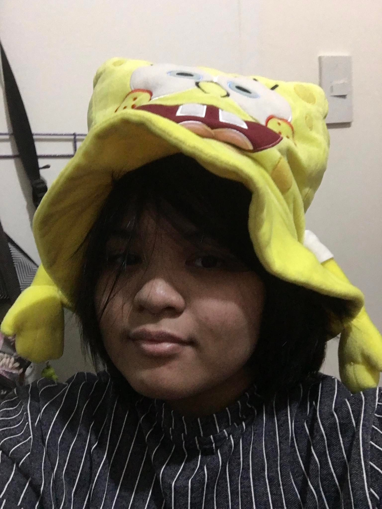

Institution Background & Significance
By: Kendra Quico
Our partnered institution specializes in studying and researching HIV/AIDS, while also providing checkups and free testing to those who suspect of having it. The work they do is significant as they spread awareness for the disease. Not many in the community are aware of it.
Institution's Problem & Solution
By: Ethan Puyod
The problems that the institution faces is facing difficulties in studying and researching for a cure. As HIV/AIDS spreads quickly in the body, what we can do as a community is knowing how to prevent from attracting the virus. This is our best solution, as they continue to gather information about the virus.
Kendra Quico and Ethan Puyod are students from ADDU Junior High School. They are students that want to learn how to code, and they make webpages every now and then, such as this webpage. They also work with the other members of the lovely Group 3A, Rashley, Miguel, and Erwin, in order to make websites together. They are both from Grade 9 St. John Berchmans.
